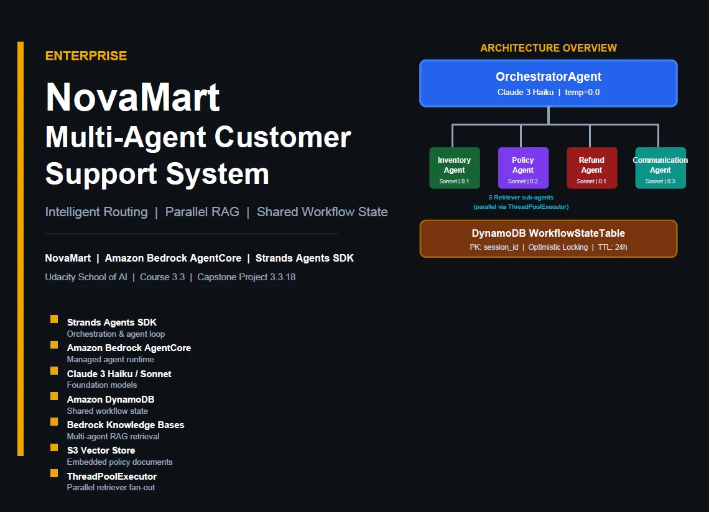

Why AI agents, and why now
Most of my work has been computer vision on edge devices: cameras on plant floors, OpenVINO pipelines and Jetson boards in the field. Language models first entered that work from the side, to summarise alerts and to reason over sensor data. By 2026 it was clear that the next step was not better summaries but agents: systems that decide, call tools, keep state and recover when something fails.
I wanted to learn to build those systems properly, with the same discipline I apply to embedded and vision systems. The AWS AI & ML Scholars program offered a structured route, and on 8 October 2026 I completed the Future AWS Agent Engineer Nanodegree. My capstone passed all 120 points of its official test suite on the same day.
How the program works
AWS AI & ML Scholars is run by AWS and Udacity in two phases:
| Phase | What it involves |
|---|---|
| 1. Challenge | Free and self-paced, open to up to 100,000 learners. Follows the AWS AI Practitioner learning plan with hands-on work in Amazon PartyRock and Amazon Bedrock. |
| Assessment | Learners are ranked, and the top 4,500 receive a fully funded Udacity Nanodegree. |
| 2. Nanodegree | One of three tracks. I chose the most technical: Future AWS Agent Engineer, covering Amazon Bedrock, Amazon Nova, retrieval-augmented generation and single- and multi-agent systems. |
Three projects, each harder than the last
The Nanodegree is built around projects rather than exams. Each one raised the difficulty in a specific way, and each taught one lesson I now apply everywhere.
August: a guarded support chatbot
One agent on an AgentCore Harness with three fixed routes and a single database tool. A routing guard written in plain code decides when a ticket may be saved, and the Lambda function checks the payload again before writing. It scored 0.95 correctness in Bedrock evaluation with zero harmfulness. Lesson: let the model suggest, let code decide.

September: a support agent with six capabilities
One Strands agent on AgentCore Runtime using Gateway tools, a Knowledge Base, Memory, Code Interpreter and Browser. Every tool returned the right answer, yet the agent once quoted a customer $95 for a $99 order because it paraphrased the calculator's result. Lesson: test the final reply, not just the tool output.
October: a five-agent RAG system
A supervisor routes each request to inventory, policy, refund and communication agents. The policy agent searches three knowledge bases in parallel, and every agent writes to a shared DynamoDB record protected by version checks. It scored 120/120. Lesson: give each agent one job and keep shared state consistent.


Habits I'm keeping
- Separate the suggestion from the decision. The model may choose a route; code checks preconditions before anything is written.
- Write the rules down. NovaMart's routing is six explicit rules tested in CI, not a prompt that "usually works".
- Keep evidence. Every project shipped with recorded transcripts, screenshots, evaluation datasets and trace maps, so anyone can check the results.
- Report every number. Including the weak helpfulness score taught me more about evaluation than the strong correctness score.
- Tear everything down. Each project ended with an audit confirming no AWS resources were left running.
- Plan for production from day one. Even coursework includes notes on authentication, idempotent refunds and how long customer memory is kept.
An agent isn't ready because it handles a good demo. It's ready when you can show what it did, why it did it, and that it does nothing when it shouldn't act.
Advice for future applicants
- Treat Phase 1 seriously. Only the top performers on the assessment move on, so the free material is worth doing thoroughly.
- Build beyond the rubric. A small local UI, an extra test suite or a cleanup script turns a submission into a portfolio piece.
- Watch your costs. Agents, vector stores and evaluation jobs all bill; set retention limits and delete resources when you finish.
- Write it up. Explaining a design forces you to understand it, and it shows employers how you think.
What's next
The most interesting work, for me, is bringing these agent patterns back to where I started: industrial and edge systems, where an agent's actions touch real equipment and the cost of a wrong decision is physical. The habits above matter even more there. The three articles that follow cover each project in depth.